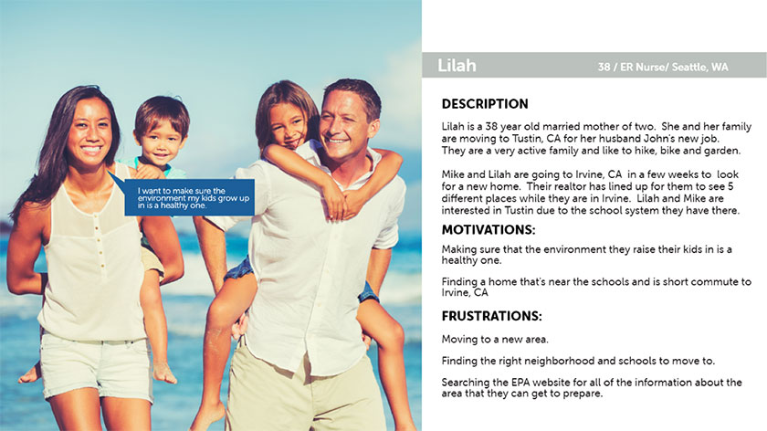

Redesign the current EPA website that it is easier for the user to navigate and use, also build a meaningful user interface and a new brand voice for a government agency website.
MY ROLE & RESPONSIBILITIES
Collaborated with 1 UX/UI design student with a
personal contribution to user research, sitemap and information architecture,
early ideation, brand UI style guide and applied UI elements to final desktop and mobile high-fidelity prototypes.
DELIVERABLE
UI style guide, brand voice, information architecture/site map,
sketches & wireframes, responsive high-fidelity desktop and mobile prototypes.
TOOLS
Pen & Paper, Miro, Google Drive, Google Forms, Google Docs,
Trello, Adobe XD, Adobe Photoshop
TIMELINE
5 weeks
Overview
What does the EPA do?
The EPA is an agency of the United States federal government whose mission is to protect human and environmental health.
They are also responsible for creating standards and laws promoting the health of individuals and the environment.
Observation & Problem Assessment
Working with one other teammate, we appreciated the incorporation of accessibility into the site,
but the website was lacking personality and missing a brand voice. Also, the website navigation
was cluttered and in need of restructuring. The homepage was made up of primarily links which
was not particularly engaging. We would like to change the brand voice of the site and make it
more personable and inviting with a cleaner interface and easy navigation.
Examined the current EPA website to assess the brand & information architecture.
Who is the User?

First, we created a married professional woman looking to relocate from Seattle with her husband
and two small children. Lilah’s user scenario: Lilah Shaw and her family are moving to Tustin, CA
from Seattle, WA in a couple of months for a new job opportunity for her husband John. The couple
has two young children, Abby who is 7, and Jonah who is 3. They are checking out homes on zillow.com
and want to find out about the environment of the neighborhood and air quality of the area. They are
going to meet with a realtor in a couple of weeks and Lilah is trying to gather all of the information
she can before their visit to Southern California. Lilah also wants to check for mold in the homes
she is looking at so that she can spot any kind of damage easily in their potential new home.
Assessing the Current Website
Open Card Sort
We conducted an open card sort to help us in creating a newly imagined navigation in order to tackle
the information architecture and structure first. Utilizing this method we were able to synthesize
our navigation from 30 items down to 15, cutting it in half and featuring what was important according
to our user testing.
Surveys and Interviews
We interviewed several individuals between the ages of 25-65 in addition to our initial survey and
found out that it was extremely confusing for them to navigate to the pages we needed to utilize for
our redesign based on the way the site was set up. We created our new navigation based on the site
map we created and the user flow which simplified the tasks we needed to complete.
Testing for Accessibility
We utilized a screen reader test in addition to checking the code for use of alt tags in the
descriptions. We found that the site had done a good job with accessibility, but it was still
lacking in a brand voice and an approachable feel. Our goal was to keep in line with accessibility
while creating cleaner navigation and an outdoorsy voice in keeping with the EPA’s mission of
protecting the environment.
A card sorting was also used to take an inventory of the navigation items.
Defining New Structure and Visual Standards
Based on our user tasks, we created a new user flow
After completing the site architecture, we wanted to bring some of the great features that
the EPA offered based on our user persona such as an interactive mold home tour and an air quality link that mapped out
the quality of the the environment based on location.
Site map redesign
We referenced results from the card sorting activity to group like items together, minimized
redundancy and have a cleaner and more organized architecture.
Creating a brand voice
We were very inspired by all of the beautiful images of the United States to choose from.
We incorporated several beautiful images as well as a newly designed style and brand voice that truly captured the look
and feel that we were aiming for.
We created a new logo in addition to new icons and a friendlier more approachable
font.
Wireframes & Low-Fidelity Prototype
Our next steps were to create wireframes while keeping in mind what all we had learned from
the user research, competitive analysis and ideation sessions and then linking them together to formulate our first low
fidelity prototype.
Low-Fidelity Wireframes and Desktop Screens
Low-Fidelity Wireframes and Mobile Screens
Mid-Fidelity Desktop and Mobile Screens
User Testing and Key Findings
Since we wanted to validate and iterate on our designs, our next step was to test our
low-fidelity prototype with users that fit our target audience. We created a user testing plan, in which we had laid out
3 tasks for the users to perform.
Overall users like the color scheme, images and design system on the new website. It was
straight forward for the users to finish the first task of finding the Earth Day activity. For the second task, all
the user went to “My Community” section to look for information about “Mold” and then they will look under the
“Environmental Topics” and found the topic about “mold”. So the problem goes back to the sitemap and need to rework
the sitemap and user flow in order to fix the user confusion.
High Fidelity Prototype
Based on what we had learned in the user testing, we made alterations to the low-fidelity
screens and moved on to the high-fidelity phase. In this we were going to add a visual layer to our wires and bring the
product to life. Here is a small sample of the newly created prototype complete with beautiful images, newly created content
and clearer calls to action. This was our first iteration due to time constraints, however, it clearly shows the direction
and feel of the rebrand and redesign we created.
Key Learning and Takeaways
It was a challenge to restructure the current website and unify the content, apply the new UI elements
under a new brand vision. The content structure can make or break a user experience as we tried to chunk the content and use the
cards as a secondary navigation, hence to enable our users to scan the page quickly. Tackling the responsive web design can be very challenging,
how can we enhance our users experiences makes this project a valuable exercise in responsive web design. As a UX/UI
designers, when designing for any digital content, it should be accessible across different platforms and orientations.